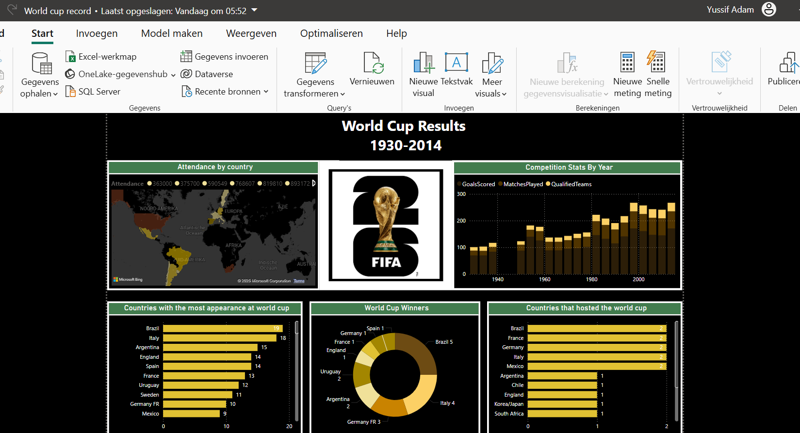

This project is dedicated to a comprehensive analysis of Maven Toys, focusing on sales, products, stores, and inventory data.
The objective is to extract valuable insights related to revenue, top-selling products, underperforming items, store performance,
and inventory levels for the years 2017 and 2018
.png)
.png)
This project focuses on conducting a comprehensive analysis of mobile phones using SQL queries.
The dataset encompasses key attributes such as brand, model, features, and prices of various mobile phones.
These queries are tailored to extract specific insights for a Power BI dashboard.
.png)
This dashboard provides comprehensive insights into road accidents for the years 2021 and 2022.
It caters to various stakeholders including the Ministry of Transport, Road Transport Department,
Police Force, Emergency Service Department, Road Safety Corps, Transport Operators,
Traffic Management Agencies, the public, and media.
This project explores a dataset containing information about forest fires in the Amazon region.
The dataset provides valuable insights into the frequency and intensity of fires reported over several years.

I developed an interactive World Cup dashboard featuring historical records from 1930 to 2014,
designed for football enthusiasts and analysts, As a passionate football fan,
this personal project was both exciting and insightful, allowing me to explore and visualize key trends,
team performances, and tournament statistics over the years.